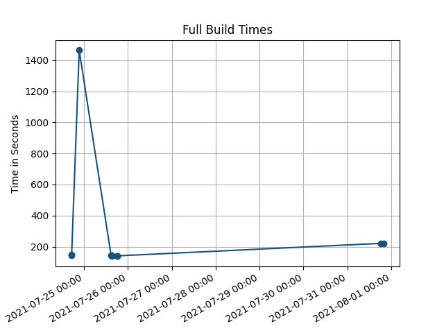
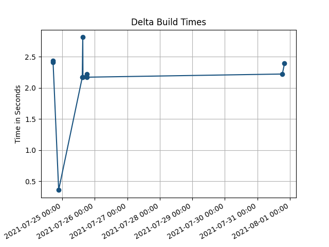
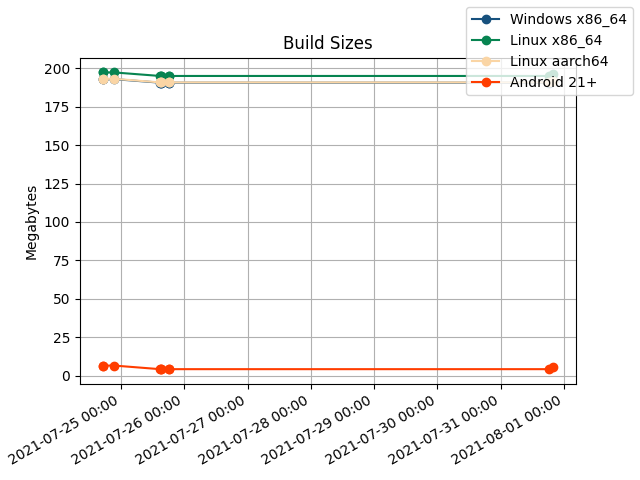
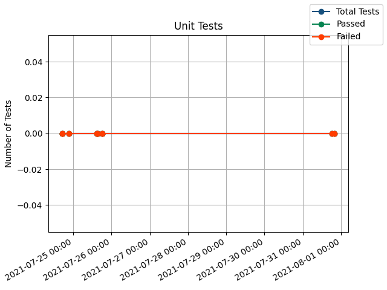
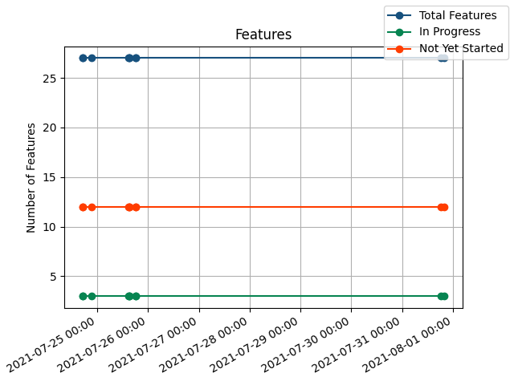
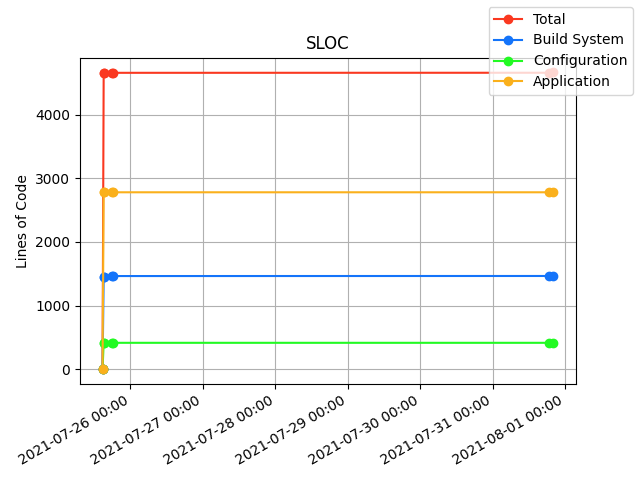

Loci is a flexible low-overhead fault-tolerant high-throughput geospatial common operational picture (COP) client, server, and standalone utility. Loci may be run on commercial-grade PCs, phones, and enterprise-grade servers. An exact list of platforms tested appears below, alongside deployment documentation.
All copies of Loci come with an unlimited 10-minute trial period with a 10-minute backoff timer. This means you can use the software at no cost for 10 minutes, after which it will stop and not continue until 10 minutes have elapsed. This was determined to strike a balance between the needs of our sales team (sales, demos) and the needs of our development team (testing, simple designs).
// TODO add license sales contact info (also mentioned in deployment guides)
Loci may also be extended in arbitrary ways; the most common is to add support for a new type of radio, which usually takes less than a week of development work followed by a week of testing. Link to API Docs.
Windows 64-bit
Linux x86 64-bit
Linux ARM 64-bit
Android
Online Only
// TODO build asciidoc source from /guides/ into .pdf files and link output here
The colossal scope of this project necessitates constant rigour to avoid making the system
unmaintainably complex. The following metrics are tracked with every build and may be used to
ensure the system is not rotting, becoming incorrect, or otherwise accumulating debt at a pace the dev team cannot pay off.






Generated by change number 565c6b419a1a826435a67d7975937368fa5b000d at 2021-07-31 20:05:24 UTC on azure-angel by jeffrey.
{kind=link}
{kind=link}
{kind=link}
{kind=link}
{kind=link}
{kind=link}